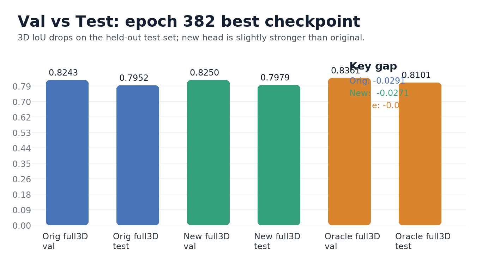
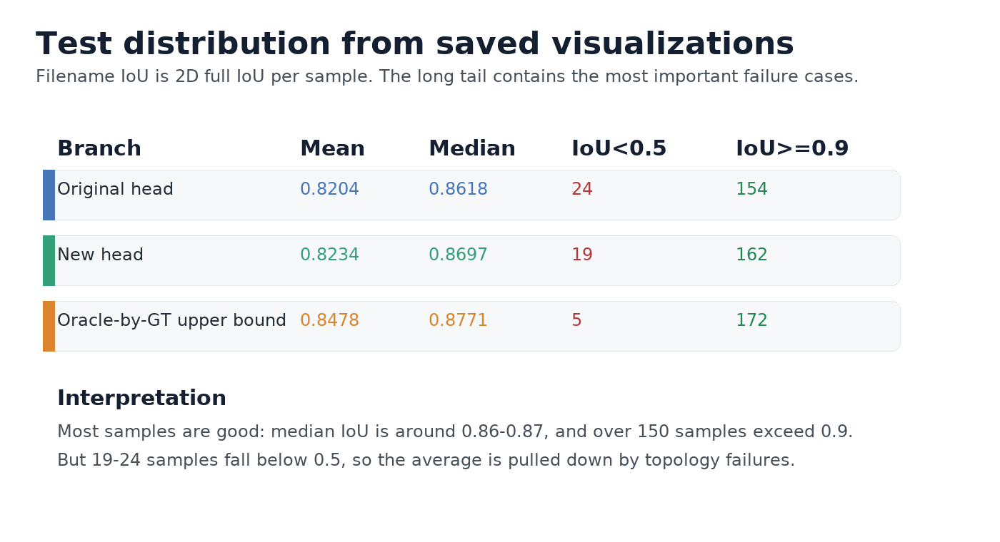
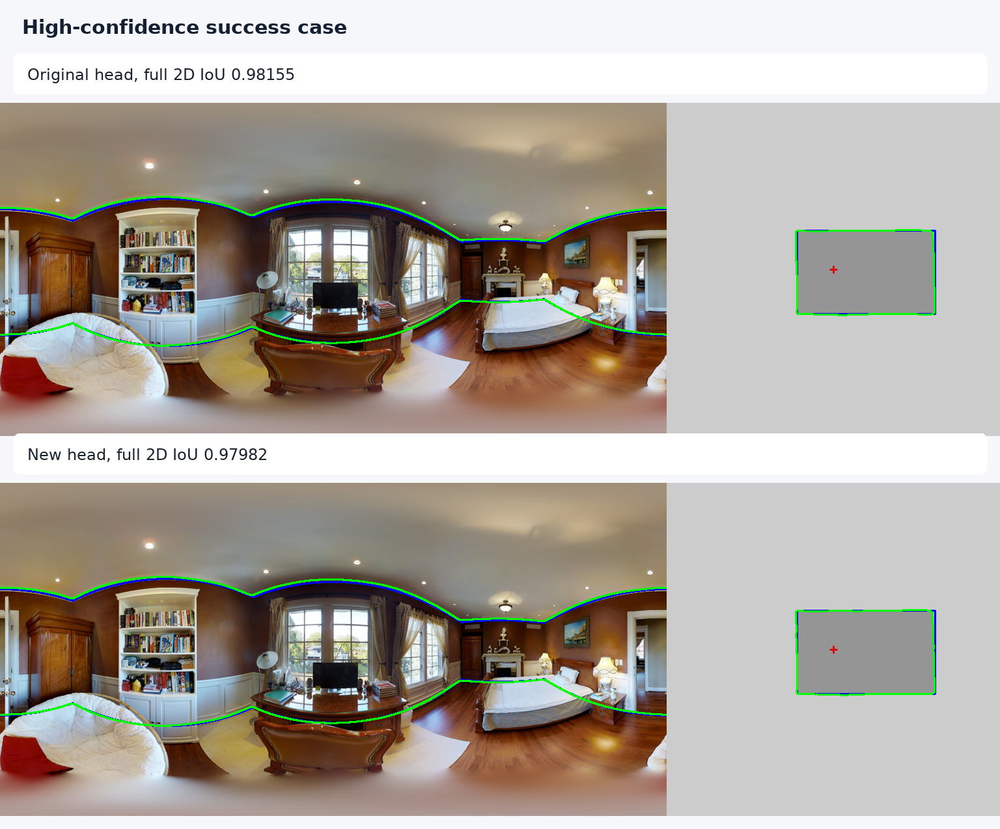
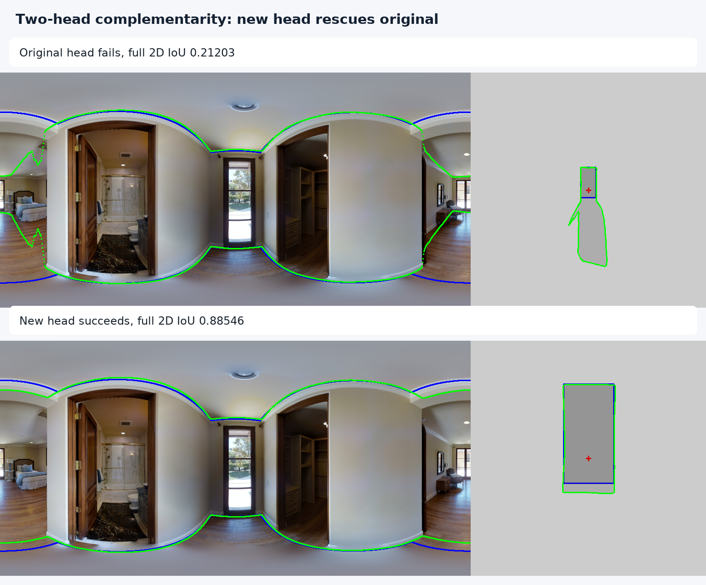
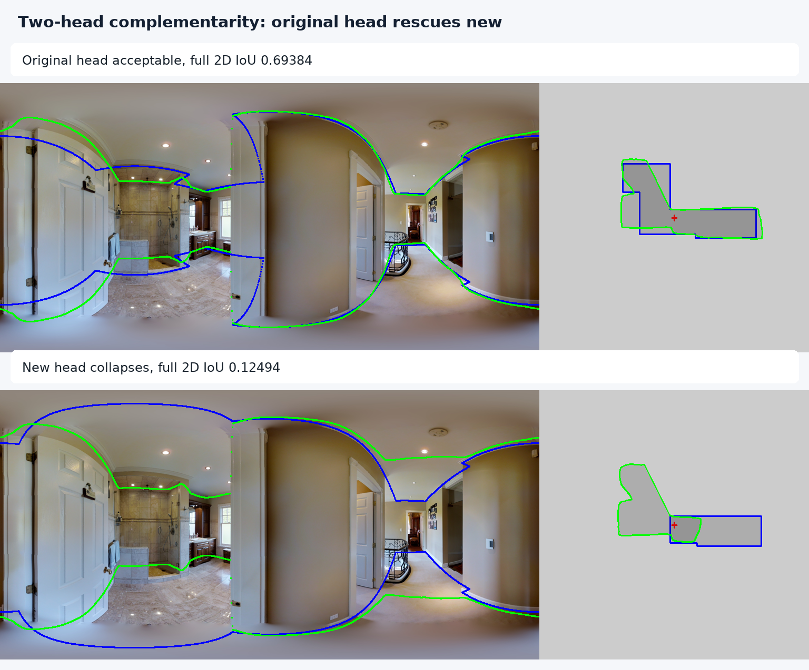
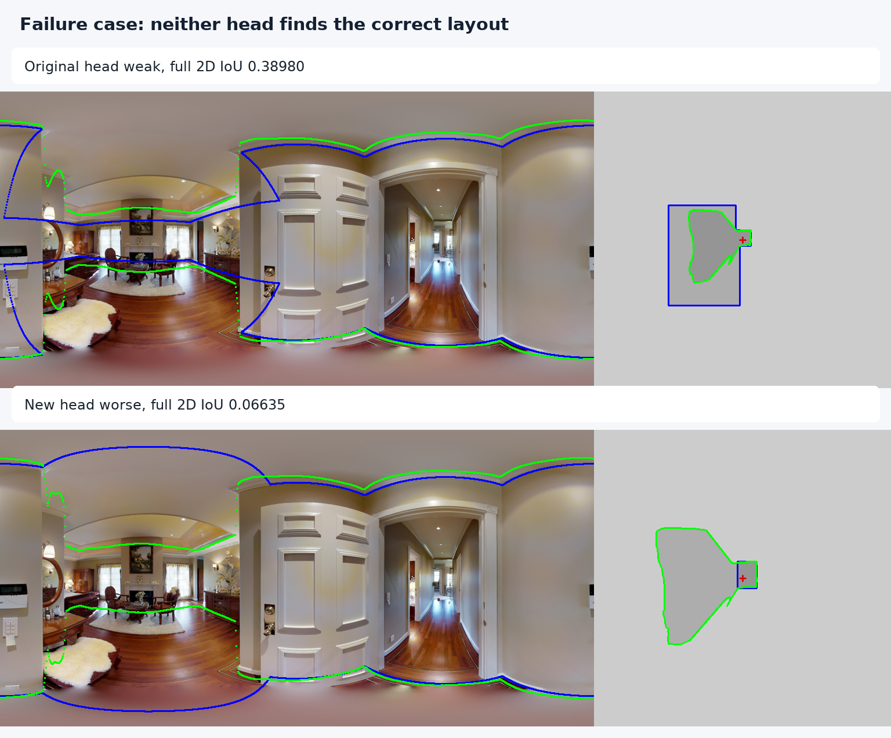

本次评估使用 2026-05-27 21:39 保存的 best checkpoint：model_2026-05-27-21-39-39_best_0.8243_382.pkl。
测试集共 458 张，全量保存可视化结果。由于原始配置的 AMP 在 test 阶段触发 half/float 类型不一致，本次仅关闭 AMP，模型结构和权重不变。

val 指标来自 epoch 382；test 指标来自本次 2026-05-28 20:47 的评估。

保存图片文件名里的 IoU 是 full 2D IoU。Original head 有 24 张低于 0.5，new head 有 19 张低于 0.5；如果用 GT oracle 选 head，低于 0.5 的样例只剩 5 张。

这个样例两个 head 都接近 0.98。模型在规整房间、墙面边界明确、遮挡较少时表现很好。

同一张图中 original head 几乎选错布局，new head 能恢复到高 IoU。这说明双头不是完全重复的，确实存在互补信息。

反过来也成立：new head 有时会崩掉，而 original head 仍然可用。因此不能简单固定选择 new head。

这类样例是审稿人最容易质疑的地方：不是边界轻微偏移，而是布局拓扑或房间范围判断错误。平均指标不错，但长尾失败仍然明显。